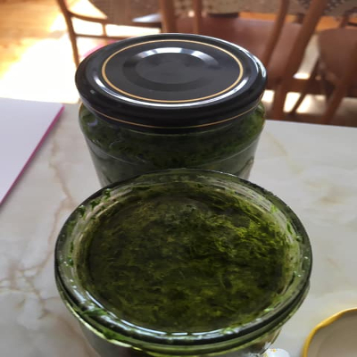
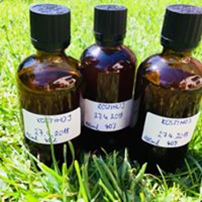
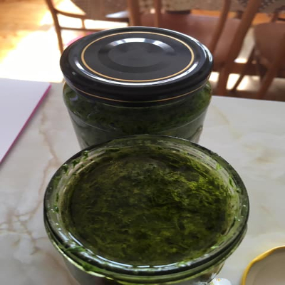
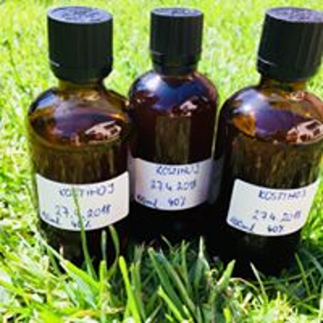

Ponúkame zdravie a krásu vo forme byliniek a výrobkov z nich
~ Všetko je domáce,kvalitne spracované a vyrobené z lásky a pre to, lebo nás to baví ~
PRODUKTY
 



BLOG
PÚPAVOVÝ SIRUP
Púpavový sirup by nemal chýbať v žiadnej domácej lekárničke 🌿☝️ Prečo? Je to najúčinnejší sirup pri bolestiach žlčníka, prečisťuje pečeň a podporuje vylučovanie žlče. Obsahuje okrem železa a vápnika aj mimoriadne veľa vitamínu C a B2, preto je vhodný na detoxikáciu organizmu a krvi. Pomáha liečiť choroby dýchacích ciest a podporuje vykašliavanie, takže je to veľký pomocník pri chorobách, ako chrípka či angína. Funguje nielen ako liek, ale aj ako prevencia. Recept na púpavový sirup: 300 kvetov púpavy 1,5 litra vody 1 väčší citrón alebo kyselina citrónová (1ČL) 1 -1,5 kg trstinového cukru Hrsť sušenej levandule ( nemusí byť ) Príprava: Púpavové kvietky zbierame v čistom prostredí. 300 kvetov máme nazbieraných raz dva 😉 Kvety zalejeme prevarenou (vychladnutou!) vodou, pridáme očistený a na plátky nakrájaný citrón a necháme odstáť 24 hodín. V tejto fáze môžete pridať spomínanú hrsť sušenej levandule, ktorá dodá sirupu jemnulinkú vôňu. (Vôňa neovplyvní chuť púpavy 🙂 ) Potom si zlejeme vodu, najlepšie cez gázu, prípadne bavlnenú plienku. Kvietky dobre vyžmýkame! Pridáme cukor a sirup si prihrejeme na najnižšom stupni/ohni,aby sa nám cukor ľahšie roztopil. Nevaríme! Len prihriať a pri náznaku prvej peny na povrchu odstavíme a ešte teplé nalievame do fliaš. Sirup môžeme piť zriedený s vodou alebo po čajových lyžičkách 3krat denne. Nech Vám padne na úžitok ❤️ ( Inšpirácia od Príroda uzdravuje)
PODBEĽ LEKÁRSKY
Momentálne pomaličky konči sezóna podbeľu. Kto chce ist zbierať a ešte nebol tak šup šup. Má výborne účinky na zdravie: • Podporuje obranyschopnosť, chráni bunky pred radikálmi, antiseptické účinky. • Podporuje zdravé dýchacie cesty, odstraňuje kašeľ, hlieny a zápaly ústnej dutiny. • Odstraňuje bolesti hlavy, brucha, svalov a kĺbov. • Podporuje a dezinfikuje kožné poranenia a rôzne kožné choroby. •Podporuje trávenie a prečisťuje hrubé črevo.
MEDVEDÍ CESNAK
• Podporuje imunitný systém a ochranu zdravia, antispetické, antibakteriálne, antibiotické účinky – dezinfikuje vnútro aj vonkajšok tela. • Zlepšuje a hojí poranenia kože • Prečisťuje a zlepšuje: dýchacie cesty (kašeľ, hlieny, zápal), pečeň a krv, močové cesty a obličky. • Podporuje trávenie, zlepšuje vyprázdňovanie a odstraňuje plynatosť. • Znižuje vysoký cholesterol z krvi, znižuje vysoký krvný tlak, účinná prevencia pred kardiovaskulárnymi ochoreniami. •Močopudný účinok odvodňuje nadbytočnú vodu z tela. •Upokojuje nervový systém, zlepšuje kvalitu spánku, zlepšuje funkciu mozgu a pamäti. Teraz je ten správny čas ( minimalne u nás na východe Slovenska 🙃) ist si nazbierať medvedí cesnačik.
Kontakt
©2020 Sezónne a zdravo.sk
Nová Ľubovňa 846/B065 11